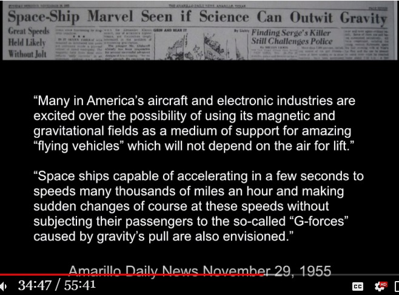
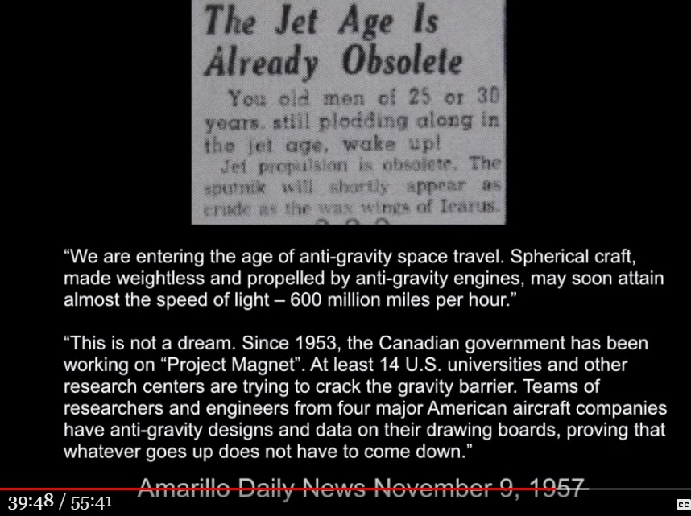
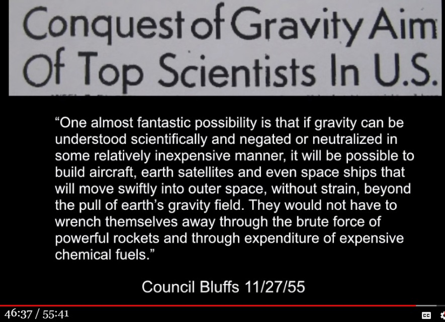
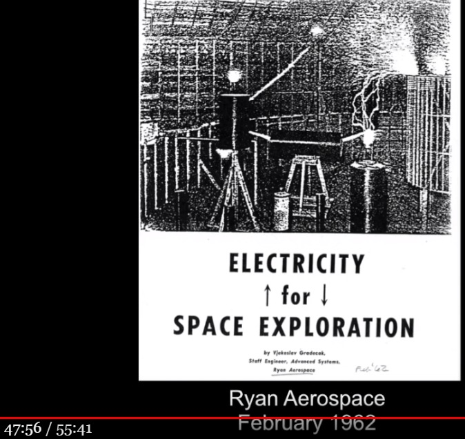
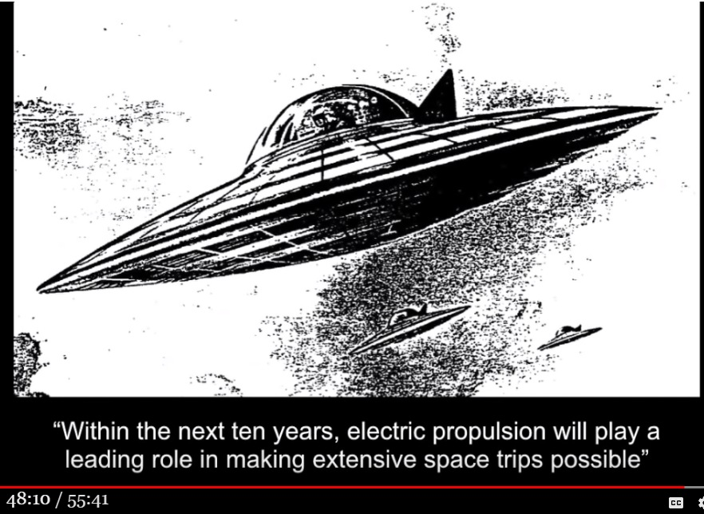

Fallacy of Michael Schratt's claim that "the U.S. government acquired anti-gravity technology in the 1950s."

(image source: Does ANTI-GRAVITY Technology Really EXIST? - YouTube - https://www.youtube.com/watch?v=Ki7YkOjVzDg )
Preface
- Richard Dolan and Michael Schratt are both accomplished UFO researchers, but even they are not gods, and some mistakes are inevitable. One of these mistakes is discussed below, but it is not intended as an attack on either of them. - The following is based on a recent (Published on Jul 8, 2019) video in which Richard Dolan interviewed Michael Schratt as a guest. - In the interview below, Michael Schratt claims that "the U.S. government acquired anti-gravity technology in the 1950s. He also provides specific evidence for this claim. - The host, Richard Dolan, strongly agrees with Michael Schratt's assertion. - Michael Schratt asserts the following.- (A) The U.S. government acquired anti-gravity technology in the 1950s. - (B) The U.S. government manufactures and possesses flight devices with flight performance equivalent to ET's UFOs.- Michael Schratt cites the following as the basis for his argument- (C) In the 1950s, prominent military aircraft manufacturers, leading research organizations, and university researchers simultaneously and repeatedly announced in newspapers and technical journals that "the realization of an antigravity device is imminent," "a breakthrough in antigravity technology has been achieved," and "jet engines are a thing of the past," and so on. However, after a certain period of time, they stopped mentioning antigravity technology.- Michael Schratt discusses a number of its specific published articles and statements in this video, which he uses as evidence to support his title claim. In other words, Michael Schratt believes that- (D) A number of leading research institutes, prominent aircraft manufacturers, universities, and even the military all announced at the same time that the realization of an antigravity device was imminent, because they had found a definite technological breakthrough. - (E) A few years later, the breakthrough was made, and the anti-gravity device was put into practical use and treated as top secret. Therefore, they never mentioned it again.- This is an overview of this video, but the above is only an introduction to this article.Michael Schratt's fallacy of assertion
- Here's where we get down to business: Michael Schratt determined that- There are many unanimous circumstantial evidences C. Therefore, A and B are established.- But that is completely wrong. Rather, we can determine the following.・There is circumstantial evidence C that is in agreement with many others. Therefore, A and B are not valid.- The rationale for this is explained below.Why did circumstantial evidence C arise?
- Why did circumstantial evidence C arise? In other words, how did the following situations arise in the 1950s?- (C) In the 1950s, prominent military aircraft manufacturers, leading research organizations, and university researchers simultaneously and repeatedly announced in newspapers and technical journals that "the realization of an antigravity device is imminent," "a breakthrough in antigravity technology has been achieved," and "jet engines are a thing of the past," and so on. However, after a certain period of time, they stopped mentioning antigravity technology.- If the acquisition of anti-gravity technology is a fact, why did they not keep it a top secret when the feasibility of its realization began to be seen, and why did they make a big show of it repeatedly? Why did they stop mentioning it after a certain period of time? - Michael Schratt completely missed the real reason and the background. He jumped to his desired conclusion in a hurry. - When you realize the real reason and background, you can understand why Circumstantial C arose. It goes beyond the level of simply being able to understand, and one can say, "Oh, I see".McCarthyism was the reason for circumstantial evidence C.
- First, a quote from Wikipedia.President Harry S. Truman's Executive Order 9835 of March 21, 1947, required that all federal civil-service employees be screened for "loyalty". The order said that one basis for determining disloyalty would be a finding of "membership in, affiliation with or sympathetic association" with any organization determined by the attorney general to be "totalitarian, fascist, communist or subversive" or advocating or approving the forceful denial of constitutional rights to other persons or seeking "to alter the form of Government of the United States by unconstitutional means". ref: https://en.wikipedia.org/wiki/McCarthyism- Note the year 1947 above. It is no coincidence that the Roswell case occurred in 1947. - The goal of the U.S. government was to uncover the Soviet spy network. In order to uproot the spy network, it was necessary to provide a bait that would be eagerly consumed by the spies who had taken root in various parts of the United States. The situation C was widely publicized as the bait for this purpose. Once the spy network had been caught as intended, there was no longer any need to spread the bait. - Both McCarthyism and the Soviet spy network are part of Richard Dolan's doctoral work in contemporary American political history, but regrettably he has not been able to link his knowledge to Michael Schratt's argument.Reference
    Video (55:41)
・"THEY'VE ABSOLUTELY DONE IT." Michael Schratt on Gravity Research. Richard Dolan Show (2019-07-10)First published article (Japanese)
Michael Schratt が「1950年代に反重力技術の突破口が開かれた」と断言。その根拠は… （途中：その1） (2019-07-10)Thanks
Translated with www.DeepL.com/Translator (free version)
(2022-06-01 translation)